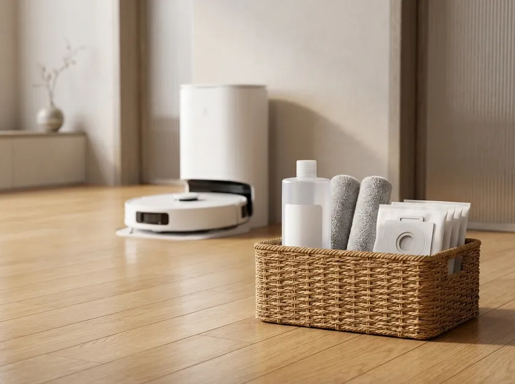

에코백스 (ECOVACS)
에코백스 T90 프로 옴니 1년 세트 구성과 롤러 물걸레·필터 관리법
글·구성: 제이상점 · 기종별 1:1 호환 실물 점검 · 교체 주기 비교표 · 스마트스토어 패키지 안내

핵심 관리 · 선택 체크포인트
- 에코백스 디봇 T90 프로 옴니와 T80 옴니는 회전 원판 대신 원통형 극세사 롤러 물걸레와 블루·블랙 V자 메인브러시, 곡선형 2암 블루 사이드브러시를 사용합니다.
- 원목 건조대에서 원통형 롤러 물걸레와 V자 메인브러시 말리기: 세척을 마친 회색 원통형 롤러 물걸레 슬리브와 블루·블랙 V자 메인브러시, 상단 화이트 탭이 달린 다크그레이 필터는 다용도실 원목 건조대에 올려 바람이 잘 통하도록 말려 주세요.
- 1년 패키지 구성품과 기종별 옵션 확인표: 다용도실 원목 서랍 정리함에 블루 곡선형 사이드브러시와 화이트 칼라 더스트백, 다크그레이 필터, 원통형 롤러 걸레를 칸별로 정돈해 두면 교체할 때 찾기 쉽습니다.
- 도크 옆 바구니 수납과 베란다 햇볕 건조 루틴: 복도나 거실 도크 옆 라탄 바구니에 전용 클리너 용기와 여분 롤러 물걸레, 더스트백을 담아 두면 보충 동선이 간편해집니다.
- 에코백스 세정액 구분법과 투입 위치 안내도 함께 읽어 보세요: 에코백스 세제를 고를 때 디봇용과 윈봇용을 구분하는 기준은 에코백스 DEEBOT·WINBOT 세제 구분 가이드에서, 세정액 투입 시 확인할 점은 에코백스 T80·X8 프로 옴니 세정액 사용 안내에서 자세히 다루고 있습니다.
실물 부품 디테일 · 관리 구성 이미지




부품 규격 · 점검 기준표
| 확인 항목 | 부품·옵션 특징 | 점검·선택 포인트 |
|---|---|---|
| 메인·사이드 브러시 | 블루·블랙 V자 하이브리드 롤러 / 블루 곡선형 2암 사이드브러시 | 브러시 모 사이 먼지 제거 및 휘어짐 점검 |
| 원통형 롤러 물걸레 | 그레이 극세사 원통형 롤러 슬리브 | 세척 후 원통 안쪽까지 건조 및 여분 교대 장착 |
| 필터·더스트백·클리너 | 화이트 탭 다크그레이 필터 / 화이트 칼라 더스트백 / 500ml 클리너 | 상세페이지 필수 옵션에서 세트 구성·수량 확인 |
💡 교체 주기가 겹치는 필터·브러시·물걸레·더스트백은 단품 배송비를 여러 번 내기보다 에코백스 T90 프로 옴니 기간별 세트(3개월·6개월·1년)로 미리 구비해 두면 물세척 후 24시간 교대 건조까지 끊김 없이 관리할 수 있습니다.
자주 묻는 질문 (FAQ)
Q. 에코백스 T90 프로 옴니 1년 세트 구성과 롤러의 메인·사이드 브러시 규격과 관리 기준은 무엇인가요?
A. 블루·블랙 V자 하이브리드 롤러 / 블루 곡선형 2암 사이드브러시 규격을 사용하며, 브러시 모 사이 먼지 제거 및 휘어짐 점검 기준으로 점검·교체하면 청소 효율을 안정적으로 유지할 수 있습니다.
Q. 에코백스 T90 프로 옴니 1년 세트 구성과 롤러의 원통형 롤러 물걸레 규격과 관리 기준은 무엇인가요?
A. 그레이 극세사 원통형 롤러 슬리브 규격을 사용하며, 세척 후 원통 안쪽까지 건조 및 여분 교대 장착 기준으로 점검·교체하면 청소 효율을 안정적으로 유지할 수 있습니다.
Q. 에코백스 T90 프로 옴니 1년 세트 구성과 롤러의 필터·더스트백·클리너 규격과 관리 기준은 무엇인가요?
A. 화이트 탭 다크그레이 필터 / 화이트 칼라 더스트백 / 500ml 클리너 규격을 사용하며, 상세페이지 필수 옵션에서 세트 구성·수량 확인 기준으로 점검·교체하면 청소 효율을 안정적으로 유지할 수 있습니다.
제이상점 1:1 검수 추천 패키지 · 구매 안내
메인 추천 구성
대표 구성 참고가 71,100원대 (옵션·쿠폰별 스마트스토어 결제 화면 기준)
1년 세트6개월 세트3개월 세트
☑️ 주문 전 확인해 두면 좋은 제이상점 안심 포인트
· 기종별 1:1 전용 규격 검수: 모델명·연식에 맞는 호환·정품 구성을 검수해 오주문 불안을 줄였습니다.
· 해외직배송 미리 주문 팁: 중국 구매대행·해외직배송 상품이므로 마지막 여분 1개를 꺼내 쓰는 시점에 개인통관고유부호와 함께 여유 있게 주문해 두시면 훨씬 경제적인 비용으로 끊김 없이 교체하실 수 있습니다.
· 기종별 1:1 전용 규격 검수: 모델명·연식에 맞는 호환·정품 구성을 검수해 오주문 불안을 줄였습니다.
· 해외직배송 미리 주문 팁: 중국 구매대행·해외직배송 상품이므로 마지막 여분 1개를 꺼내 쓰는 시점에 개인통관고유부호와 함께 여유 있게 주문해 두시면 훨씬 경제적인 비용으로 끊김 없이 교체하실 수 있습니다.
📖 더 많은 가정 내 사용 스토리와 상세 후기가 궁금하시다면
📱 네이버 블로그 모바일 원문 보기 ↗